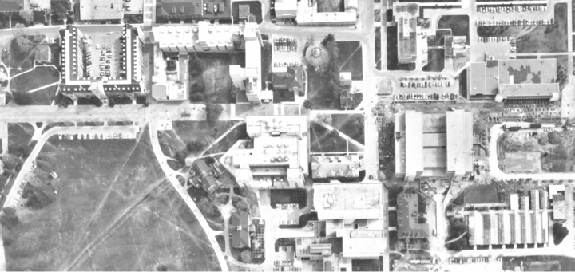
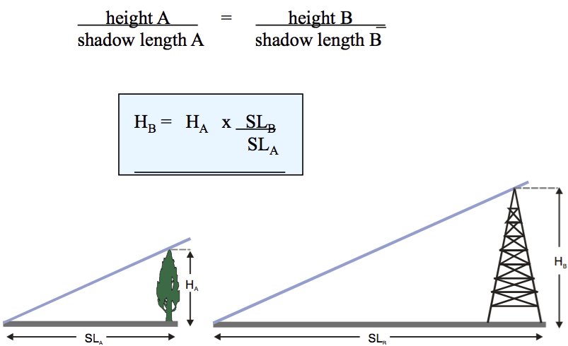
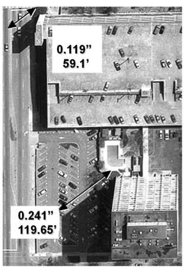

Press 'o' to toggle the slide overview and 'f' for full-screen mode.
Choose the theme in which to view this presentation:Black - White - League - Sky - Beige - Simple
Serif - Blood - Night - Moon - Solarized
Copyright © John Lindsay, 2015
GEOG*2420
The Earth From Space
Photogrammetry Part 2
John Lindsay
Fall 2015
Scale Calculation: Method 1
- Measure the distance between two points on the image and divide by the corresponding ground distance between the same two points.
Scale Calculation: Method 1
A working example:
- Measured a photo dist (PD) = 0.15 m
- Measured a ground dist (GD) = 5000 m
- Scale = PD / GD = 1 / PSR
- PSR = GD / PD = 5000 m / 0.15 m
- PSR = 33,333
- Scale (as a RF) = 1 : 33,333
A working example:
- What if you don't have the original photo but do know the grid resolution (m / pixel)?
- Ground dist = grid resolution × #pixels
- (m /
pixel ) ×pixel = m
Scale Calculation: Method 2
- Divide the focal length (f) by the flying height of the aircraft above the terrain, H.
- H is calculated by subtracting the ground elevation (E) from the altimeter reading (A), which indicates flying height above sea level.
Scale Calculation: Method 2
Elevation and photo scale

Flying height and photo scale
Focal length and photo scale
Measuring heights
Methods for measuring vertical heights
- Single-photo methods
- Stereo-pair or parallax methods (two images required)
Single-photo method 1:
Sun-angle shadow method
Single-photo method 2:
Proportional Shadow Length method

Single-photo method 2:
Proportional Shadow Length method

Single-photo method 2:
Proportional Shadow Length method
- The shadow must fall on level ground
- The full shadow length must be visible including its beginning (which is often obscured by the object itself!)
Single-photo method 3:
Relief-displacement method
d = relief displacement
r = radial distance from top of object to the principal point
d is related to r, flying height (H) and the height of the object (h).